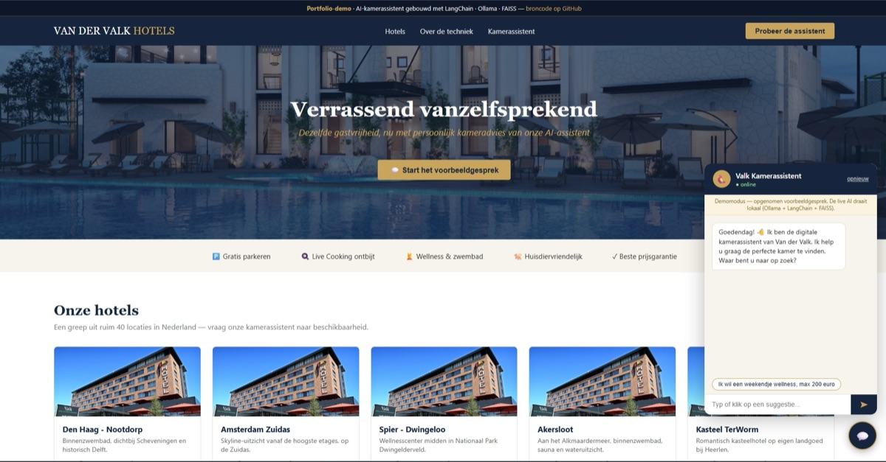

AI Hotel Kamerassistent

Een chatassistent die hotelgasten helpt om de kamer te vinden die bij ze past. Je typt gewoon wat je zoekt, bijvoorbeeld "een weekendje wellness, max 200 euro". De assistent stelt dan een paar vragen en komt met kamers die daarbij passen. Ik heb dit als schoolproject gemaakt, als prototype voor Van der Valk.
- Python
- LangChain
- Ollama
- FAISS
- Flask
- Streamlit